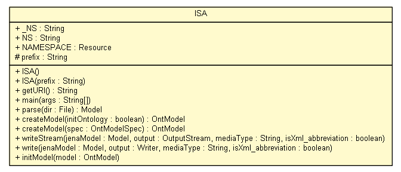

net.toxbank.isa
Class ISA

java.lang.Object
 net.toxbank.isa.ISA
net.toxbank.isa.ISA
public class ISA
- extends Object
Main ISA class
- Author:
- nina
|
Field Summary |
static String |
_NS
The namespace of the vocabalary as a string ("http://www.toxbank.net/isa.owl#%s") |
static com.hp.hpl.jena.rdf.model.Resource |
NAMESPACE
The namespace of the vocabulary as a resource |
static String |
NS
|
protected String |
prefix
|
|
Method Summary |
static com.hp.hpl.jena.ontology.OntModel |
createModel(boolean initOntology)
|
static com.hp.hpl.jena.ontology.OntModel |
createModel(com.hp.hpl.jena.ontology.OntModelSpec spec)
|
static String |
getURI()
|
static void |
initModel(com.hp.hpl.jena.ontology.OntModel model)
|
static void |
main(String[] args)
|
com.hp.hpl.jena.rdf.model.Model |
parse(File dir)
|
static void |
write(com.hp.hpl.jena.rdf.model.Model jenaModel,
Writer output,
String mediaType,
boolean isXml_abbreviation)
|
static void |
writeStream(com.hp.hpl.jena.rdf.model.Model jenaModel,
OutputStream output,
String mediaType,
boolean isXml_abbreviation)
|
| Methods inherited from class java.lang.Object |
clone, equals, finalize, getClass, hashCode, notify, notifyAll, toString, wait, wait, wait |
_NS
public static final String _NS
The namespace of the vocabalary as a string ("http://www.toxbank.net/isa.owl#%s")
- See Also:
- Constant Field Values
NS
public static final String NS
NAMESPACE
public static final com.hp.hpl.jena.rdf.model.Resource NAMESPACE
The namespace of the vocabulary as a resource
prefix
protected String prefix
ISA
public ISA()
ISA
public ISA(String prefix)
getURI
public static String getURI()
main
public static void main(String[] args)
parse
public com.hp.hpl.jena.rdf.model.Model parse(File dir)
throws Exception
- Throws:
Exception
createModel
public static com.hp.hpl.jena.ontology.OntModel createModel(boolean initOntology)
throws Exception
- Throws:
Exception
createModel
public static com.hp.hpl.jena.ontology.OntModel createModel(com.hp.hpl.jena.ontology.OntModelSpec spec)
throws Exception
- Throws:
Exception
writeStream
public static void writeStream(com.hp.hpl.jena.rdf.model.Model jenaModel,
OutputStream output,
String mediaType,
boolean isXml_abbreviation)
throws IOException
- Throws:
IOException
write
public static void write(com.hp.hpl.jena.rdf.model.Model jenaModel,
Writer output,
String mediaType,
boolean isXml_abbreviation)
throws IOException
- Throws:
IOException
initModel
public static void initModel(com.hp.hpl.jena.ontology.OntModel model)
throws Exception
- Throws:
Exception
Copyright © 2011-2012 ToxBank project. All Rights Reserved.